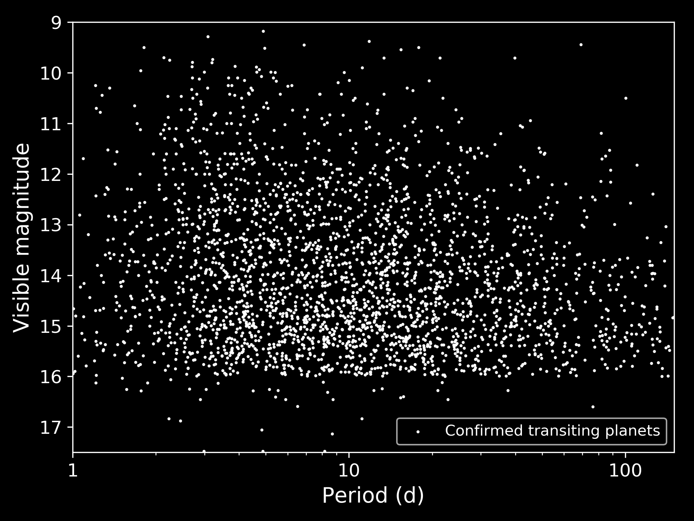

One Hit Wonders

But most of these planets will have short periods,
TESS will observe a thousand long-period planets transit just once.
Without follow-up observations, most of these planets will be lost.
The One Hit Wonders survey is hunting
the TESS single transit planets.*
We began September 2019 (follow our progress).

Few long-period planets are known that transit bright stars.
